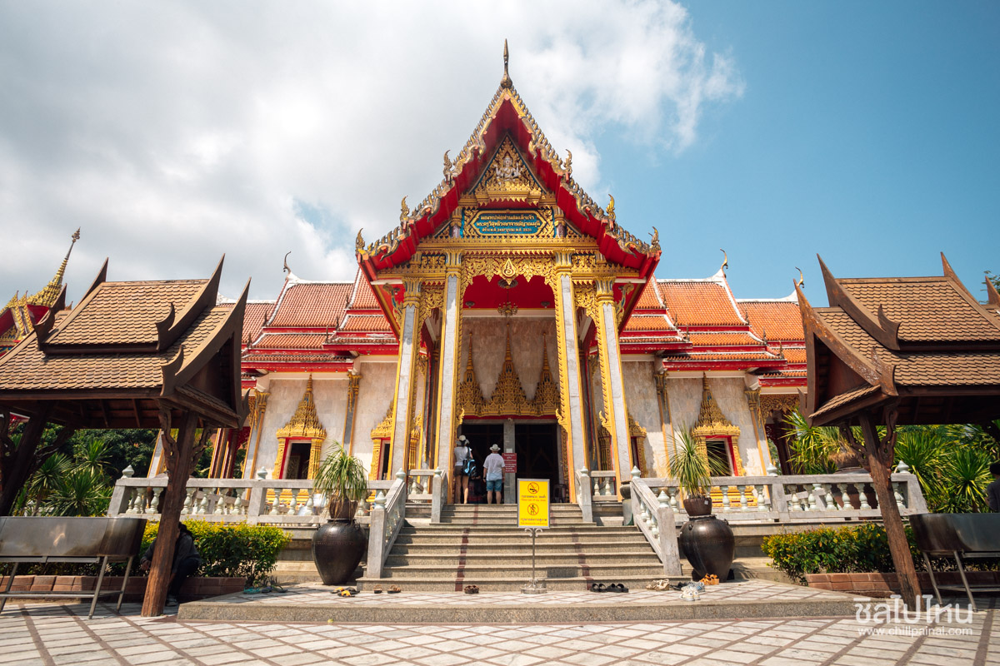
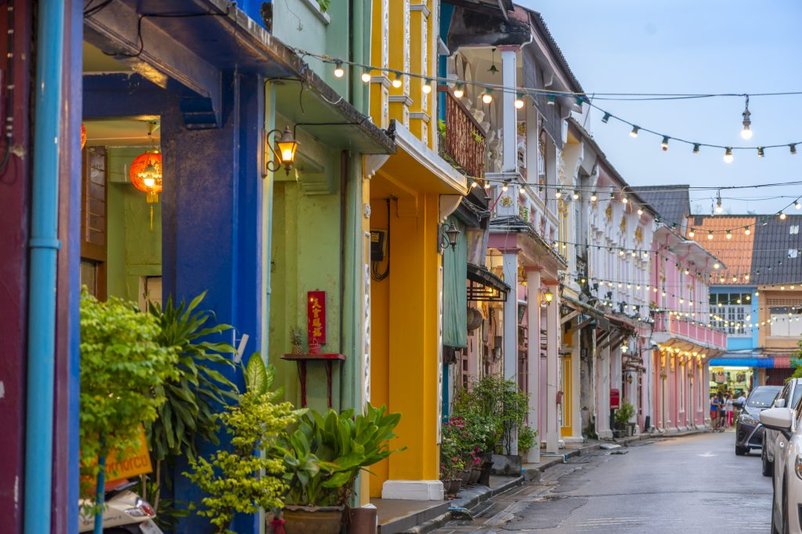
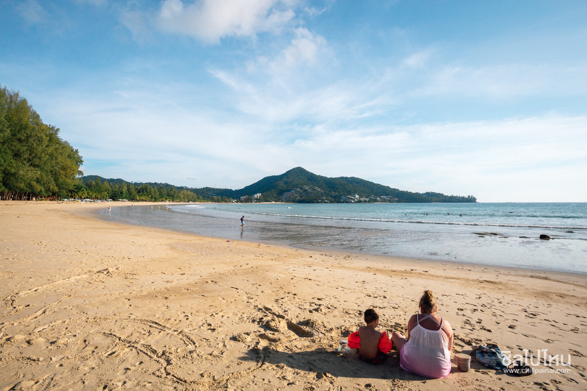
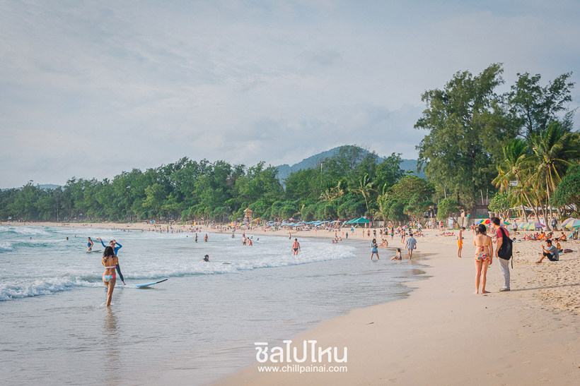
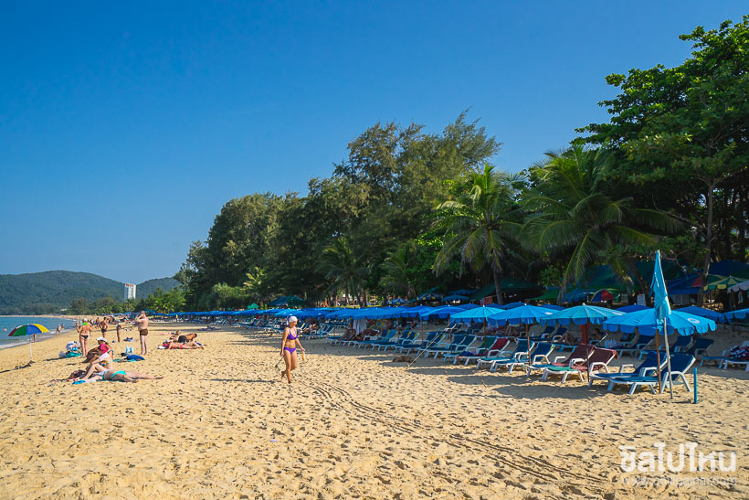
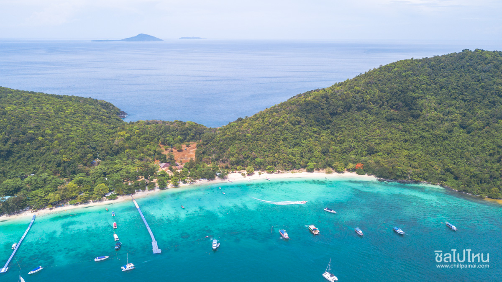
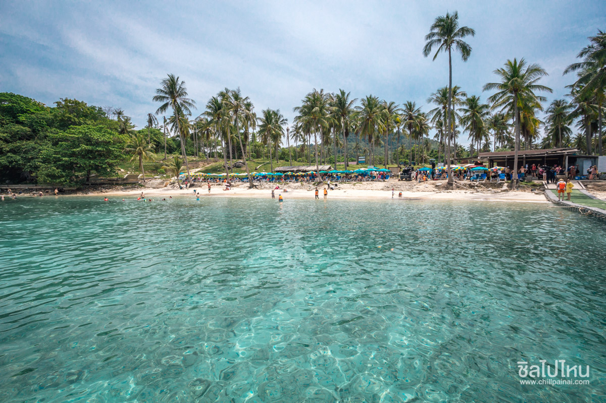
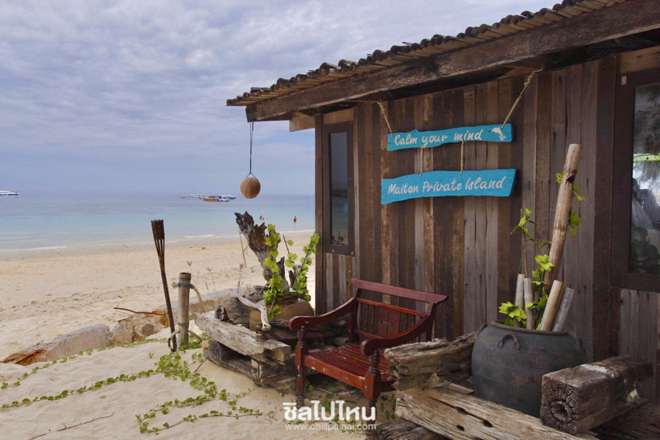
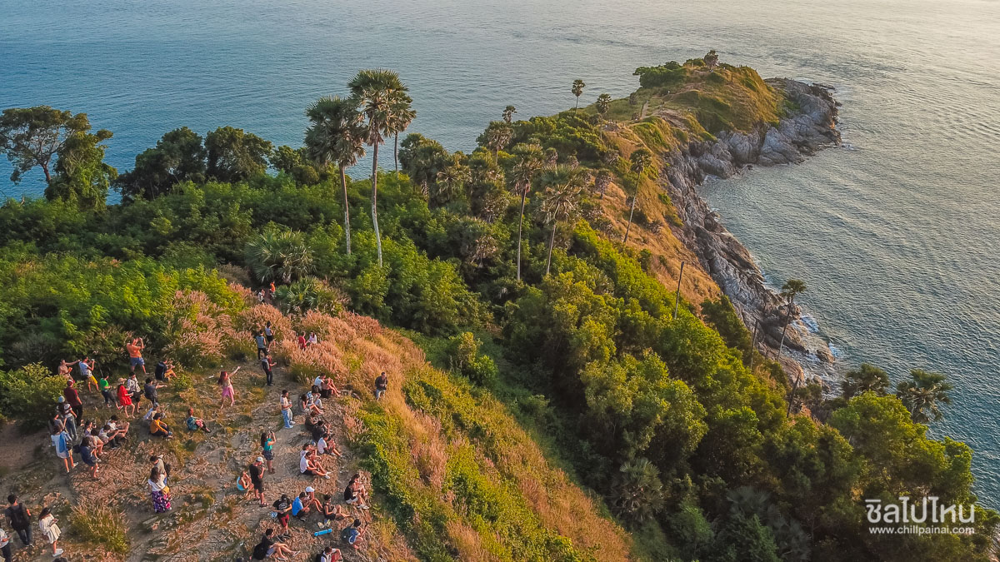

10 แหล่งท่องเที่ยวประจำจังหวัด
1.วัดฉลอง(วัดไชยธาราราม)
วัดฉลองเป็นวัดเก่าแก่ ไม่มีบันทึกที่แน่ชัดว่าสร้างขึ้นเมื่อใด แต่มีบันทึกขึ้นในสมัยรัชกาลที่ 3 พระบาทสมเด็จพระจุลจอมเกล้าเจ้าอยู่หัว ทรงเปลี่ยนชื่อใหม่เป็น วัดไชยธาราราม แต่ชาวบ้านยังคงเรียกว่าวัดฉลองเพราะเป็นชื่อที่เรียกง่ายกว่า ในวัดมีพระมหาธาตุเจดีย์ พระจอมไทยบารมีประกาศ และพระมหาธาตุเจดีย์และพระพุทธรูปปางต่าง ๆ มากมาย ปัจจุบันเป็นจุดท่องเที่ยวภูเก็ตที่นิยมในจังหวัดภูเก็ต

2.ย่านเก่าและสตรีทอาร์ท
เมืองภูเก็ตสิ่งแรกที่ผู้ไปเยือนจะรู้สึกสะดุดตาก็คือตึกเก่าที่ตั้งตระหง่านอยู่ในย่านการค้าเก่าเเก่ของเมืองเป็นอาคารสไตล์ "ชิโนโปรตุกีส" ที่ผสมผสานเอาความเป็นศิลปะตะวันตกและตะวันออกเข้าไว้ด้วยกันอย่างกลมกลืนจนเป็นเอกลักษณ์ที่โดดเด่นของเมืองภูเก็ตและไฮไลท์การมาเยือนเมืองเก่าแห่งนี้ก็คือการไปถ่ายรูปกับศิลปะบนกำแพงหรือสตรีทอาร์ตที่มีกระจายอยู่บนฝาหนังบนถนนดีบุกถนนพังงาและถนนถลางโดยใช้ชื่อโครงการนี้ว่า F.A.T Phuket (Foot Art Old Town) มีศิลปินมากมายทั้งไทยและต่างชาติมาร่วมกันวาดภาพบนผนังในเขตเมืองภูเก็ตจำนวน 12 ภาพให้บรรยากาศเหมือนกำลังเดินอยู่ที่ปีนังหรือฮาจิเลนประเทศสิงคโปร์เลย

3.หาดกมลา
หาดที่ตั้งอยู่ทางเหนือของหาดป่าตองห่างจากตัวเมืองประมาณ 26 กิโลเมตรหาดกมวาเป็นหาดที่ยาวประมาณ 2 กิโลเมตรและเป็นจุดชมวิวพระอาทิตย์ตกที่สวยงามอีกแห่งหนึ่งในภูเก็ตบริเวณหาดกมลาเต็มไปด้วยร้านอาหารและที่พักมากมายใกล้ที่เที่ยวภูเก็ตแฟนตาซีและที่นี่ยังเป็นที่ตั้งอนุสรณ์สถานซึนามิเมื่อปี 2547 อีกด้วย

4.หาดกะตะ
คึกคักเป็นอันดับที่สองรองจากหาดป่าตองที่นี่ยังคงคับคั่งไปด้วยร้านอาหารและที่พักชายหาดลงเล่นน้ำได้สบาย ๆ ฝรั่งนอนอาบแดดกันเป็นปลาหมึกเลยทีเดียวนอกจากนี้ยังเป็นที่นิยมของบรรดา Surfer ทั้งหลายอีกด้วยเพราะหาดกะตะมีคลื่นสูงเหมาะแก่การเล่นเซิร์ฟสุด ๆ

5.หาดกะรน
อยู่ติดหาดกะตะ แต่บริเวณหาดกะรนจะคนไม่คึกคักเท่าหาดกะตะเหมาะแก่การมานอนอาบแดดชิล ๆ เล่นน้ำเบา ๆ เป็นที่ชื่นชอบของฝรั่งใครสายบีชอยากหาที่นั่งชิลนอนอาบแดดลองแวะมาที่หาดกะรนกันได้เลย

6.เกาะเฮ
เป็นเกาะที่มีเสน่ห์มากน้ำใสทะเลสวยหาดทรายละเอียดเล่นน้ำสนุกถือเป็นไข่มุกอันดามันสมชื่อที่สำคัญสามารถเดินทางไปง่ายและประหยัดเวลามากใช้เวลาจากท่าเรือฉลองเพียงแค่ 10-15 นาทีส่วนใหญ่นักท่องเที่ยวจะไปเที่ยวแบบ One Day Trip ไปเช้า-เย็นกลับ

7.เกาะราชา
ถ้าพูดถึงความใสของน้ำทะเลและหาดทรายสีขาวละเอียดคงหนีไม่พ้นสถานที่แห่งนี้ อาจจะไม่ใช่เกาะฮอตฮิตอะไรมากมาย แต่บอกเลยว่าใครได้มาติดเกาะที่นี่สักคืนจะไม่อยากกลับแน่นอนเกาะราชาหาดทรายและน้ำทะเลนั้นใสมากกกคล้าย ๆ เกาะสิมิลันเลย การันตีความสวยงามด้วยหาดทรายขาวละเอียดและต้นมะพร้าวที่เยอะมากกกคือแบบนี้สิที่เรารู้สึกว่าได้มาทะเลจริงๆได้สัมผัสความบีชที่เเท้ทรู ที่นี่จะมาเที่ยวแบบ One Day Trip ก็ได้หรือจะค้างคืนบนเกาะก็มีที่พักอีกด้วย

8.เกาะไม้ท่อน
เกาะไม้ท่อนเกาะเล็ก ๆ ที่เป็นเหมือนไข่มุกซ่อนตัวอยู่ในฝั่งอันดามันทางทิศตะวันออกของเกาะภูเก็ตในอดีตเกาะไม้ท่อนถือเป็นเกาะส่วนตัวที่ถูกปิดมาเป็นระยะเวลานับ 10 ปี แต่ตอนนี้ได้เปิดให้นักท่องเที่ยวสามารถเข้าชมและท่องเที่ยวได้แบบจุใจกันแล้วเกาะไม้ท่อนจึงเป็นเกาะที่หลาย ๆ คนปรารถนาที่สุดในพ.ศ. นี้เพราะมีธรรมชาติใต้ท้องทะเลที่อุดมสมบูรณ์บรรยากาศสวยงามอากาศบริสุทธิ์และปะการังริมชายฝั่งที่สวยงามไม่แพ้ใต้ทะเลเหมาะแก่การพักผ่อนเป็นที่สุดนอกนี้บนเกาะยังมีจุดชมวิวที่สามารถมองเห็นเกาะพีพีและเกาะอื่น ๆ ได้โดยรอบอีกด้วย

9.แหลมพรหมเทพ
จุดชมวิวที่เป็นแลนด์มาร์คสำคัญของเกาะภูเก็ต แหลมปลายสุดของภูเก็ต เป็นจุดท่องเที่ยวชมวิวที่สามารถมองเห็นพระอาทิตย์ตกน้ำได้สวยติดอันดับโลกเลยทีเดียว เพราะจุดนี่จะเห็นพระอาทิตย์เคลื่อนตัวลงสู่ทะเลได้ชัดเจน และจุดเด่นอีกแห่งหนึ่งคือ "ประภาคารกาญจนาภิเษก แหลมพรหมเทพ" ที่โดดเด่นมาแต่ไกล โดยภายในประภาคารยังมีการจัดแสดงนิทรรศการเรื่องราวต่าง ๆ ตั้งแต่ประวัติการสร้างประภาคารเลย

10.จุดชมวิวสามอ่าว
เป็นอีกจุดที่ไม่ควรพลาด ตั้งอยู่ระหว่างหาดในหานไปยังหาดกะตะน้อย (ตามเส้นทางถนนรอบเกาะ) บริเวณนี้สามารถมองเห็นอ่าวได้ถึง 3 อ่าว คือ หาดกะตะน้อย อ่าวกะตะ และหาดกะรน เรียงตัวมีลักษณะโค้งคล้ายพระจันทร์เสี้ยว ยาวติดต่อกันสามอ่าว สำหรับใครที่อยากเดินทางมายังจุดชมวิวแห่งนี้ แนะนำให้มาช่วงเย็นๆ เพราะบรรยากาศจะคึกคักมากๆ